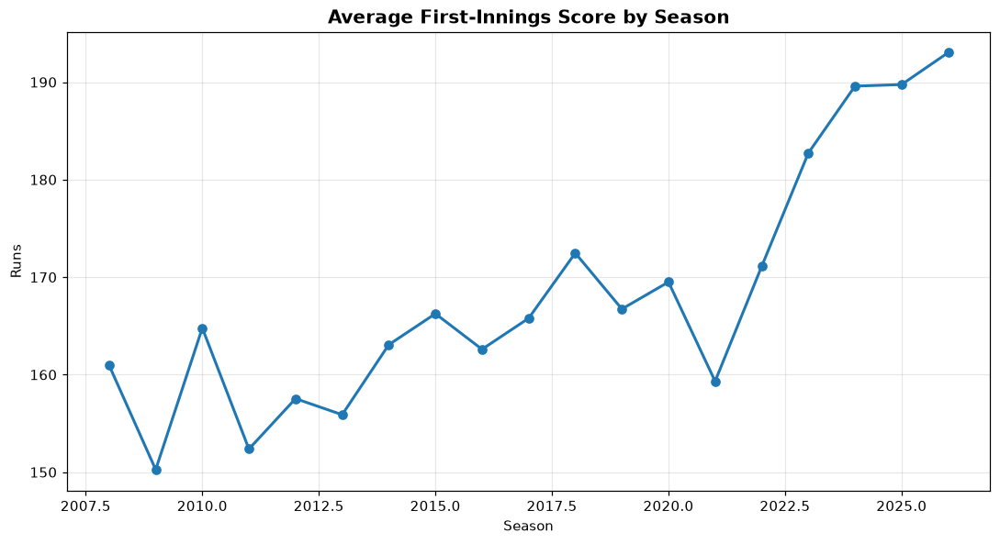
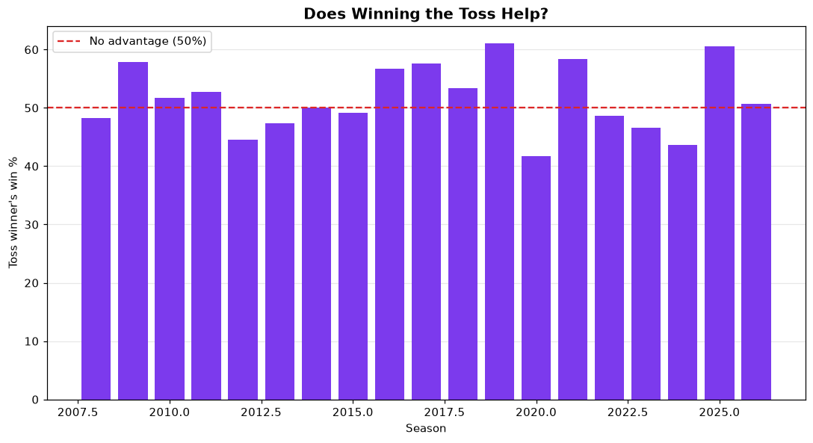
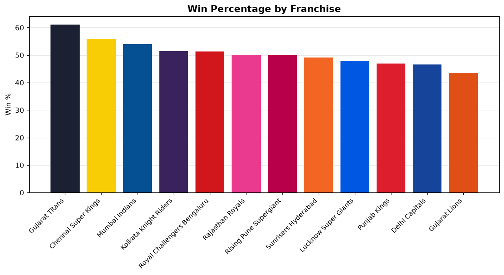
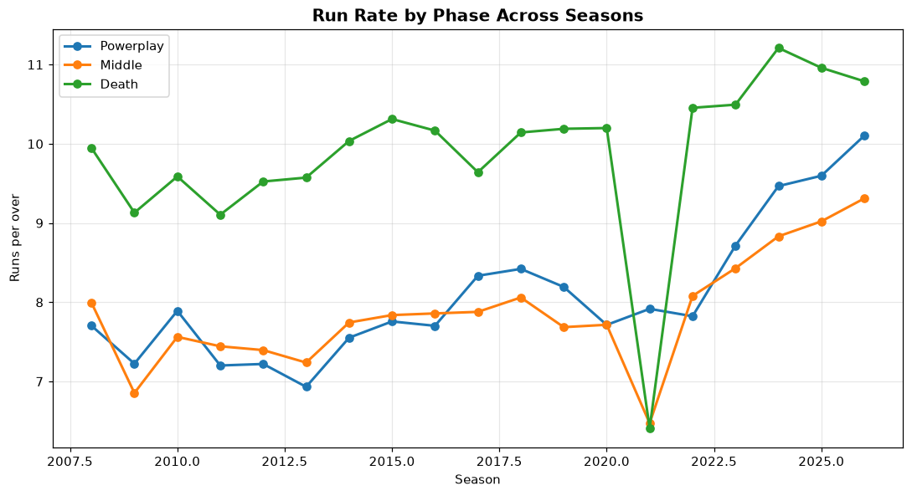
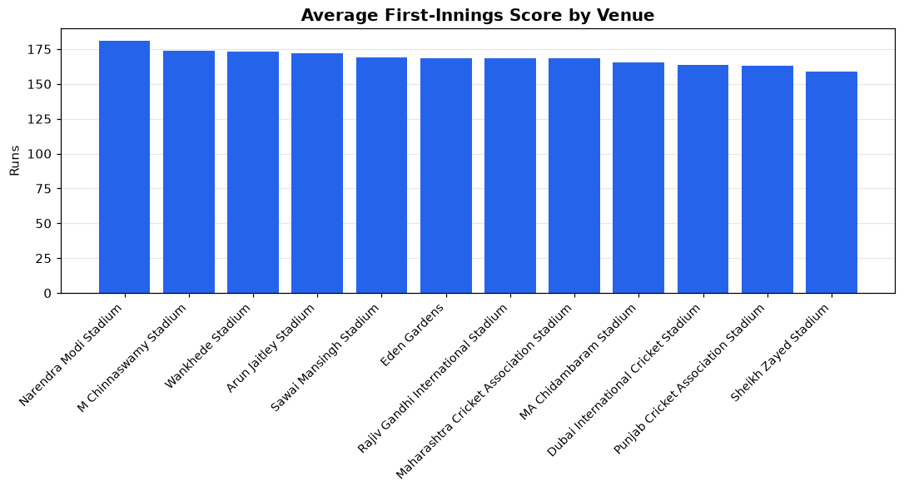
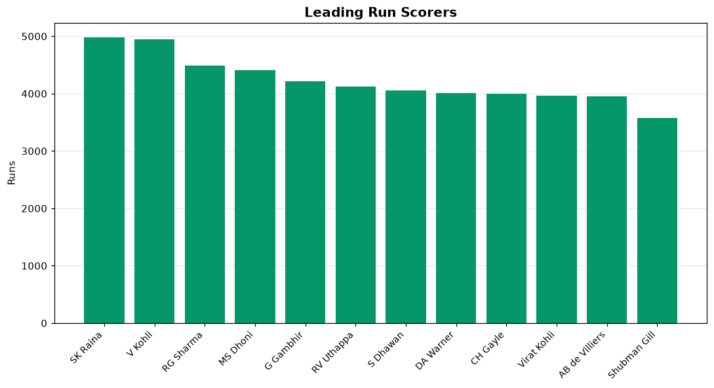

An end-to-end machine-learning system on 19 seasons of Indian Premier League cricket — automated collection from the official IPL feeds, a relational warehouse, six algorithms compared on held-out seasons, a nine-page dashboard and a documented REST API.
Every figure comes from seasons held out of training entirely (2024–2026, 215 matches). A random train/test split would leak the future into the past and inflate all of them.
| Task | Selected model | Headline metric | Verdict |
|---|---|---|---|
| Chase success (in-play) | Random Forest | ROC-AUC 0.897 | strong |
| Player of the Match | Random Forest | ROC-AUC 0.969 | strong |
| First-innings score | Random Forest | RMSE 38.2 runs | usable |
| Match winner (pre-match) | CatBoost | ROC-AUC 0.552 | near chance |
The winner model was re-evaluated at six independent cut-off points, holding out from the last two seasons (144 matches) up to the last eight (541 matches). Every window returned an AUC between 0.50 and 0.55. That stability across 541 test matches rules out sampling noise.
No pre-match feature correlates with the result above |r| ≈ 0.09
— not recent form, not head-to-head, not home advantage, not the Playing
XI's career batting average. The home side wins about 52% of IPL matches.
T20 is a short, high-variance format.
Playing XI strength, era-aware scoring levels and mirrored training fixtures lifted the model from below chance to chance. They did not invent signal absent from the data. The chase model reaches 0.90 on the same pipeline — the difference is information, not technique.
Generated directly from the warehouse by scripts/run_eda.py.






Every layer, from collection to serving.
The nine-page dashboard runs live on Streamlit Community Cloud. This page is static — a Streamlit app needs a running Python process, so it cannot be hosted on GitHub Pages itself.
Or clone and run it locally — the repository ships a prebuilt database and trained models, so there is no ingest or training step:
git clone https://github.com/ujwal-m-2006/ipl-match-prediction.git
cd ipl-match-prediction
pip install -r requirements.txt
streamlit run streamlit_app.pyOn Windows, double-click setup.bat once, then run.bat.